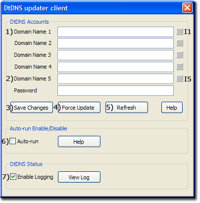
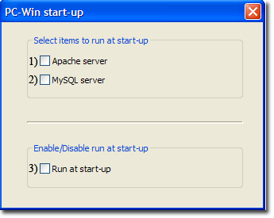
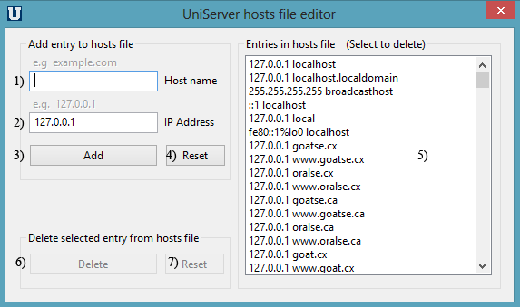

|
|
Extra Utilities |
The UniController Extra menu groups additional utilities that do not easily fit into other categories.
DtDNS
The Uniform Server Zero supports the DtDNS service by integrating a simple function to automatically update hostname IP address at DtDNS. The function is configurable, allowing you to update all five free hostnames. The function can optionally be run by Cron, making the whole task transparent.
|
Add or edit DtDNS service account. Open the DtDNS Controller and add or modify your DtDNS account as follows: Extra > DtDNS
Note 1: With configured accounts initially opening the DtDNS updater client buttons are greyed out until the refresh button is clicked. This forces user to manually refresh. Note 2: Full DtDNS details; see pages DtDNS and Create DtDNS Account |
 |
PC-Win start-up
This menu option is the only one that writes data to the registry hence is not truly portable. It allows you to automatically run UniController and optionally Apache and MySQL servers when you start your computer.
Open PC-Win start-up menu and configure as follows:
|
Extra > PC-Win start-up
Note: UniController is automatically run when Run at start-up is enabled while items 1) and 2) are optional enable/disable as desired. |
 |
The above uses command line parameter pc_win_start to automatically control the servers. UniController supports other command line parameters see page Command Line Parameters.html for details.
Manual Alternative
The following are manual instructions that replicate option 3) above.
Enable run at start-up
- Right-click Start, and then click Explore. Windows Explorer opens and displays your Start menu.
- In the left pane, navigate to the folder C:\UniServerZ.
- Left click on this folder to open it in the right pane.
- In the right pane:
- Right-click on the program UniController.exe
- In the pop-up click Copy.
- In the left pane, navigate to folder Startup Menu/Programs/Startup and left click folder Startup.
- In the right pane, right-click anywhere and then click Paste Shortcut.
- Still in the right pane, right click the UniControlder shortcut
- In the pop-up slect properties.
- In the Target field add a parameter to the end of the path as shown below
C:\UniserverZ\UniController.exe pc_win_start
Dsable run at start-up
- Right-click Start, and then click Explore. Windows Explorer opens and displays your Start menu.
- In the left pane, left click on folder Startup Menu/Programs/Startup.
- In the right pane, right click on the UniControlder shortcut in the pop-up click Delete
The following are manual instructions that replicate options 1) and 2).
Edit file: C:\UniServerZ\home\us_config\us_config.ini and change the following section as appropriate:
[PCSTARTUP] RunAtPcStartUpEnabled=false RunApacheAtStartUp=false RunMysqlAtStartUp=false
Cron
The Uniform Servers portable Cron plugin has been integrated into Uniform Server Zero. Cron's configuration file has been pre-populated with various scripts to be run. These are essentially four-line templates that require enabling to run the appropriate applications from the Cron script.
- Full Cron details; see Cron page which includes:
- Cron Configuration file
- Cron Controller
Page also includes additional information and test scripts.
Edit Win hosts file
This menu option allows you to directly run the Uniform Server edit Windows hosts file utility C:\UniServerZ\utils\EdHost.exe
Extra > Edit Win hosts file
Note: Win 7 and 8 users, at the User Account Control pop-up click Yes to allow changes to this computer.
|
A) Add IP address/Domain name pair as follows:
B) Delete IP address/Domain name pair as follows:
|
 |